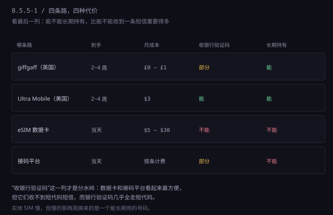
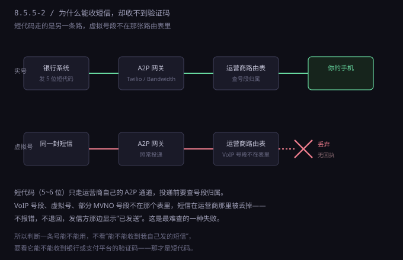
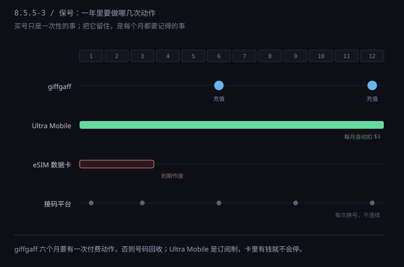

约 0.35 万字 · 3 张图 · 一条号决定你能开哪些账户
人们想要一个境外号码，通常出于三个目的。这三个目的的难度差得很远，混在一起想就会买错东西。
第一种：注册时收一条验证码。最简单，任何能收短信的号都行，甚至接码平台也能凑合。 这类需求是一次性的，用完就废。
第二种：接银行或支付机构的核实电话。难一档。这类电话是人工打的，会问你几个问题，可能还要你按键确认。 如果号码接不通，流程就卡在那里，而且对方不会留语音留言——你只会看到一封“未能联系到您”的邮件。
第三种：作为账号的长期联系方式。最难，也是唯一真正重要的。 很多平台把“手机号”当成身份的一部分：改密码要它、异地登录要它、账户被锁要它、申诉要它。 这时候号码不是工具，是钥匙。钥匙丢了，门就打不开了。
三种用途对应三种要求：
| 用途 | 要求 | 能凑合的方案 |
|---|---|---|
| 收一条验证码 | 能收短信 | 接码平台、朋友代收 |
| 接核实电话 | 能接通、能长期接 | 实体 SIM + WiFi Calling |
| 长期联系方式 | 不回收、不变更、随时能收到 | 只有自己名下的实体 SIM |
结论很直接：如果这个号码要绑在银行、支付、券商上，它必须是你自己长期持有的实体号。 前面两种用途可以省，第三种不能省。省下的那点钱，会在某一天你登不上账户的时候全部还回去。

四条路按“到手速度”排，正好和“可靠性”成反比：
下面逐条拆。每条都给：入口、成本、等多久、失败怎么办。
giffgaff 是英国的一家 MVNO（虚拟运营商），跑在 O2 的网络上。它对非英国居民友好， SIM 卡免费申请，全球邮寄，不收运费。
入口。官网 giffgaff.com，首页找 “Free SIM”，填地址。地址用拼音写，国家选 China。
一个地址可以申请多张，但没必要。
成本。SIM 本身 £0；激活不需要立刻充值，但要能接打电话、发短信，得充一次，最低 £10。 这 £10 是余额，不会过期，按用量扣。
等多久。官方说 5~10 个工作日到欧洲，到中国通常两到四周。 这段时间没有任何查询入口，你不知道它在哪，只能等。
失败怎么办。两种失败最常见：没收到、收到了但激活不了。 没收到就在官网再申请一次（免费，不心疼），或者找英国的转运地址代收再寄回来。 激活不了多半是网络问题——激活页面在英国站，用普通网络可能打不开，换个环境再试。
保号规则，这是最关键的一条。giffgaff 要求每六个月内至少有一次“付费活动”： 打一个电话、发一条短信、或者充一次值。六个月没有任何动作，号码会被回收，回收后再也拿不回来。
这条规则看着松，实际上是最容易翻车的地方——因为六个月太长，人会忘。 而且忘了不会有任何提醒，你只会在某天登录时发现“这个号码已不属于你”。
一个实用的做法：把“给这个号发一条短信”写进日历，每五个月一次，提前一个月留缓冲。 发一条短信的成本是几便士，一年不到一英镑。
Ultra Mobile 是美国的一家 MVNO，跑在 T-Mobile 的网络上。它有一个很适合这个场景的产品： PAYGO 计划，每月 3 美元，含 100 分钟通话、100 条短信、100MB 数据。
入口。官网 ultramobile.com 买 PAYGO 的 SIM 卡，约 10 美元。
它默认只寄美国境内，所以要么填一个美国转运地址（很多转运公司提供），要么在电商平台买已经寄到国内的卡。
成本。SIM $10 一次性，之后 $3/月，一年 $36。这是四条路里最贵的，也是最省心的。
等多久。走转运通常两到三周，比 giffgaff 略快，因为转运公司有固定航班。
为什么贵还推荐。三个原因：
第一，它是美国号（+1）。很多美国机构（银行、券商、支付平台）对美国号的支持最好， 有些功能甚至只对美国号开放，比如某些短信验证和电话回拨。
第二，它支持 WiFi Calling。这意味着你人在境内，只要连着 WiFi， 就能用这个号接打电话、收发短信，不产生漫游费。这是它相比 giffgaff 最实用的一点—— giffgaff 的 WiFi Calling 对非英国网络的支持不稳定，而 Ultra Mobile 跑在 T-Mobile 上，这条路成熟得多。
第三，它是订阅制。每月自动扣 $3，只要卡里有钱，号码就不会掉。 这解决了 giffgaff 那个“六个月会忘”的问题——你不需要记得任何事。
失败怎么办。两个坑。一是支付：首次购买和后续扣费需要能付美元的卡， 虚拟卡（Depay、Nobepay 这类）多数能过，但偶尔会被拒，备一张实体双币卡更保险。 二是激活：PAYGO 需要填一个美国地址和一个 ZIP，用转运地址就行，但要和后面开户用的地址保持一致。
很多人以为“有了 WiFi Calling 就等于有了一个美国本地号”。不完全对。 WiFi Calling 让你能收发，但对方看到的仍是你的 +1 号码， 而某些机构的系统会检测“这个号是不是长期在美国境内注册的网络”—— 如果它发现这个号从来只在 WiFi 上活动、从没连过美国基站，风控可能标记。 这不常见，但存在。所以真正重要的账户，别把“能不能收到”当成唯一标准。
eSIM 是焊在手机里的一颗芯片，扫码就能装一个号码，不用等邮寄。听起来完美，但它有个致命限制：
市面上绝大多数旅行 eSIM 是“数据卡”，不带电话号码。 Airalo、Nomad、Holafly 这些，卖的是流量，你在里面拿不到一个能收短信的号。 它们的“号码”只是一个数据会话标识，别人打不进来，短信也进不来。
少数能收短信的 eSIM 存在，比如美国运营商的预付费 eSIM， 但开通流程通常要求：美国支付方式 + 美国地址 + 用官方 App 激活。 这三样凑齐的难度，和直接买实体卡差不多，还多了一层“设备必须支持 eSIM”。
所以 eSIM 的正确用法不是“当主号”，是“临时落地”： 出差两周、需要当地流量、或者某个服务只认当地 IP 的时候用。用完就删，不留痕迹。
成本。按天或按周计费，$5 到 $30 不等。比实体卡贵，因为它卖的是“即时”。
失败怎么办。eSIM 没有“失败”这一说，只有“到期”。到期后号码和流量一起消失， 你什么都留不下。所以它天然不适合承载任何需要长期验证的账户。
接码平台是另一类东西：你付几毛钱，它给你一个号码，用来收一条验证码，然后这个号就归别人了。
它有三个硬伤：
所以它的适用范围很窄：注册一个不重要的一次性服务，比如下载某个试用工具、看一篇文章。 任何和钱、身份、长期数据相关的东西，都不该用接码平台的号。
判断标准很简单：如果这个账号丢了你会心疼，就别用接码号。
这是本节最重要的一张图。很多人栽在这里，而且栽得莫名其妙：明明能收到朋友发的短信，就是收不到银行的验证码。

原因在号码上。银行的验证码，绝大多数是从短代码（short code）发出的——
就是那种五位或六位的号码，比如 72975、32265。
短代码不是普通电话号码，它是一套独立的、由运营商管理的商业短信通道。
投递的时候，运营商要查一件事：这个号段归谁。 实号（移动、联通、AT&T、O2 这些）在表里，能查到归属，短信照常投递； 虚拟号、VoIP 号、部分 MVNO 号段不在这个表里，短信会被直接丢掉。
最要命的是这个失败没有任何反馈：不报错，不退回，发信方那边显示“已发送”。 你只会看到“验证码已发送，请查收”，然后永远等不到。
所以判断一条号能不能用，不能靠“我自己发一条试试”，要按这三条验：
| 测什么 | 怎么测 | 说明 |
|---|---|---|
| 能不能收普通短信 | 用另一个号发一条 | 必要，但不充分 |
| 能不能收短代码 | 用 PayPal、银行、券商的“发送验证码”试 | 这才是关键的那一项 |
| 能不能接电话 | 让对方打一次 | 银行核实常用，很多人漏测 |
第三条最容易被忘。开某些银行账户时，对方会打电话核实，号码接不通就直接拒， 而且拒信里不写原因——你只会看到“很遗憾，我们无法为您开户”。

四条路的维护节奏完全不同：
| 类型 | 一年要做什么 | 年成本 |
|---|---|---|
| giffgaff | 每五到六个月发一条短信或充一次值 | £10 ~ £20 |
| Ultra Mobile | 什么都不用做，保证卡里有钱 | $36 + $10 首卡 |
| eSIM 数据卡 | 到期重买，号码不复存在 | $60 ~ $360 |
| 接码平台 | 每次都是新号 | 按条计费 |
看着 giffgaff 便宜，但它的隐性成本是“记得”。Ultra Mobile 贵 20 多美元一年，买的是“不用记得”。 如果你的时间比钱贵，这个交换是划算的。
还有一条经验：号码定下来之后，不要换。 换号这件事在风控系统里是明确的高风险动作，因为它符合“账号被盗后转移联系方式”的特征。 换一次，可能触发一轮重新验证；换两次，可能直接被锁。
所以顺序应该是：先想清楚这条路要走多久，再决定买哪种号。 如果只是试水三个月，eSIM 或接码就够了；如果打算长期做，第一天就上实体卡， 因为后面所有账号都会绑在这条号上，越晚换成本越高。